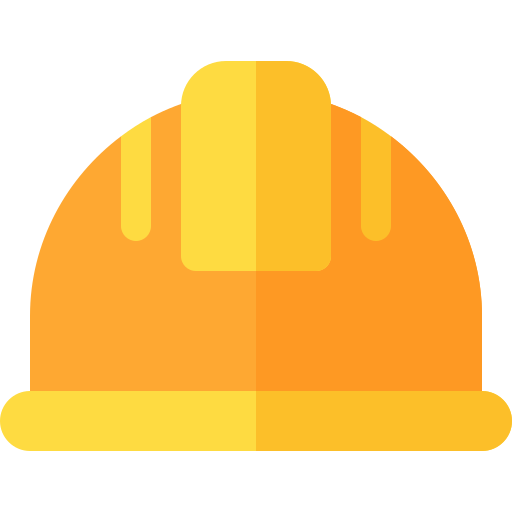

쓰는 것만으로,
법 대응이 완성됩니다.
복잡한 규제와 수기로 관리하던 점검표를 하나의 화면으로 가시화합니다.
어려웠던 안전·보건·환경 관리가 쉬워지고, 누구나 바로 실행할 수 있습니다.
현장의 문제
숨어있던 위험들,
아직도 서랍 속에 있진 않나요?

안전교육
TBM 교육은 했는데,
기록은 어디에도 보이지 않는다
종이 서명과 수기로 관리하던 체크리스트,
감사 때 꺼내 보이기 어렵습니다.
지금 당장 한눈에
꺼내 보일 수 있나요?
위험관리
놓치기 쉬운 위험,
말로만 전달하고 사라진다
조치됐다는 말뿐, 이력은 어디에도 보이지 않습니다.
그 이력, 지금 5분 안에
한눈에 드러낼 수 있나요?
법적증빙
복잡한 규제 13개,
체크만으로는 증빙이 되지 않는다
어려웠던 법령 대응, 실행과 기록과 증빙이 동시에 보여야 합니다.
사고가 났을 때
경영책임자를 지킬 수 있나요?
01 · 중대재해처벌법
복잡했던 법령 대응을,
한 화면에 시각화합니다.
자주 바뀌던 13개 항목의 이행 현황이 실시간으로 드러납니다.
실제 수행 이력이 있어야 이행 완료로 자동 반영되고,
조직별 대응 현황이 한눈에 보여 경영책임자 보고가 바로 가능합니다.
02 · 안전점검 — TBM 일지
어려웠던 교육·증빙을,
서명 한 번으로 단순화합니다.
수기로 관리하던 TBM 교육이 100% 디지털로 바뀝니다.
서명 즉시 교육 이수 이력이 자동으로 저장되고,
누구나 스마트폰으로 현장에서 바로 서명할 수 있습니다.
03 · 작업허가서
보이지 않던 승인 흐름이,
한눈에 드러납니다.
외부업체·자체 작업 모두 허가서 없이는 시작되지 않습니다.
1차 확인 → 승인 → 현장 확인 → 중간 확인까지
복잡했던 단계가 담당자 서명으로 단순하게 이어집니다.
시스템 연계 구조
흩어진 시스템이,
하나로 연결됩니다.
SAP, PLC, 국가법령DB, 방문시스템까지
현장에 흩어져 있던 시스템이 자동으로 연결됩니다.
이중입력이 사라지고, 자주 바뀌던 법령 개정도 시스템이 먼저 감지합니다.
ISO 45001 기반 PDCA
쓰기만 해도
법 대응이 보입니다.
안전은 '했다'가 아니라 '보여야' 합니다. ISO 45001 PDCA 구조로 실행과 기록이 한눈에 드러납니다.
Features
6개 영역, 99개 화면으로
복잡함을 단순화합니다.
복잡했던 중대재해처벌법 대응부터 흩어진 Legacy 시스템 연계까지, 현장에 필요한 모든 SHE 기능이 하나의 플랫폼에서 한눈에 보입니다.
중대재해처벌법
Dashboard · 경영방침 · 안전보건 전담조직 · 유해위험 확인·개선 · 관리책임자 평가 · 재발방지 대책 · 법령 이행 점검 · 수급인 평가
안전 관리
작업허가서 · TBM 일지 · 위험성 평가 · 개선요청 · 순회점검 · 안전교육 · 위원회 · 재해현황 · 도급관리 · 자율안전관리
보건 관리
건강검진 · 뇌심혈관 고위험군 · 근골격계 · 작업환경 측정 · 직무스트레스 · 유해요인 · 중증 조사표
환경 보호 및 관리
폐수처리장 · Data Sheet · 수질/대기 자가측정 · 폐기물 관리 · 약품관리대장
지속경영 관리
예산관리 · 조직도 · 직무수행평가 · 시정현황 · 준수평가 · 경영방침
표준정보 · 관리자
법령관리 · 양식 템플릿 · 권한·메뉴 · 조직·코드 · 스케줄링 · SMS·Email 알림 · 공지사항
AI 현장 감시 시스템
보이지 않던 사각지대를,
AI가 한눈에 드러냅니다.
24시간 AI가 현장 전체를 실시간으로 가시화합니다.